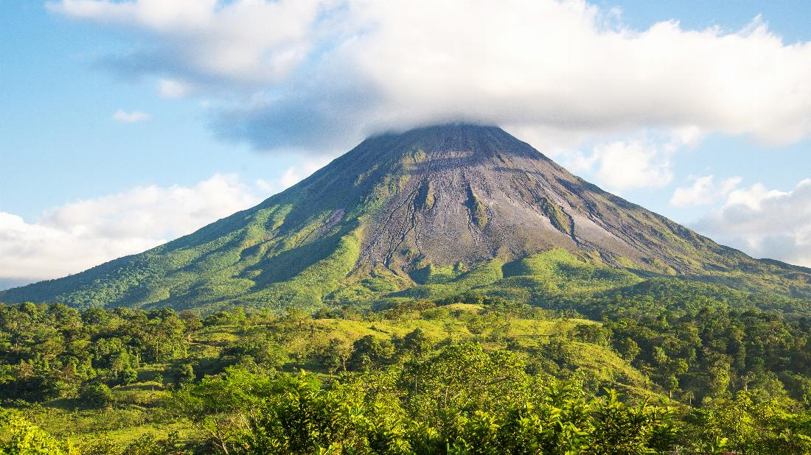
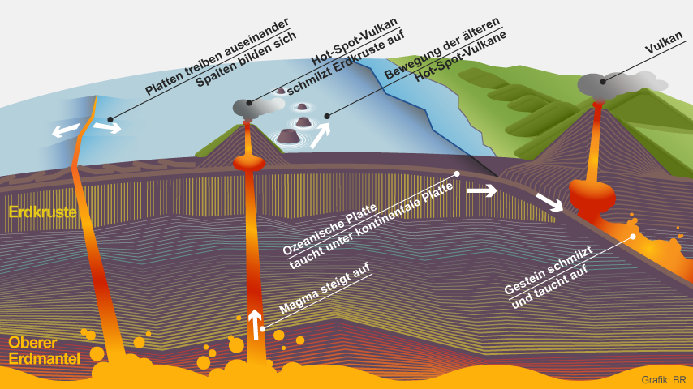
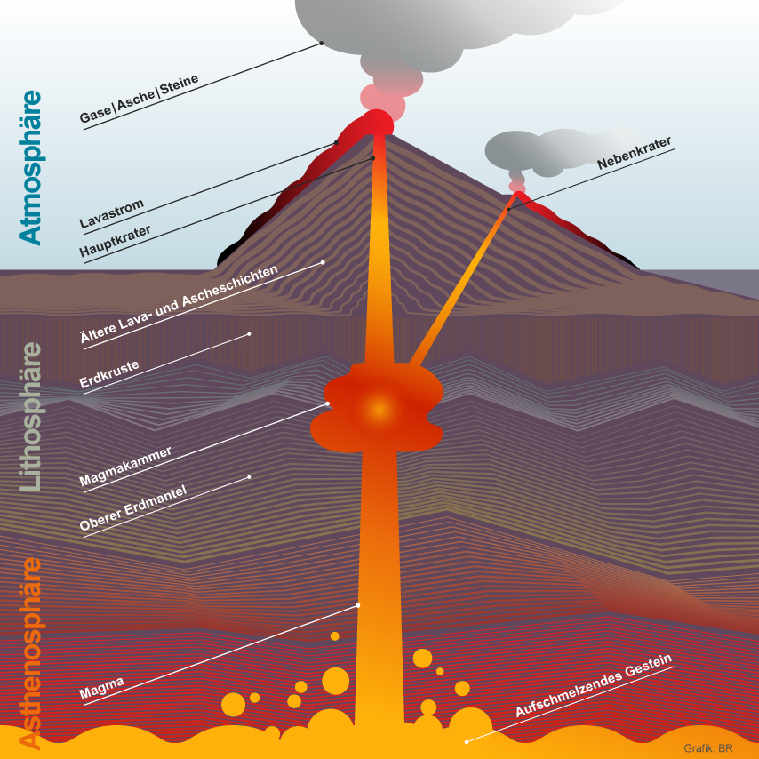
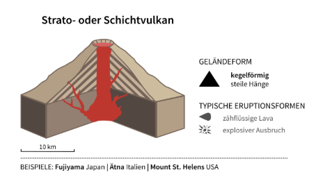
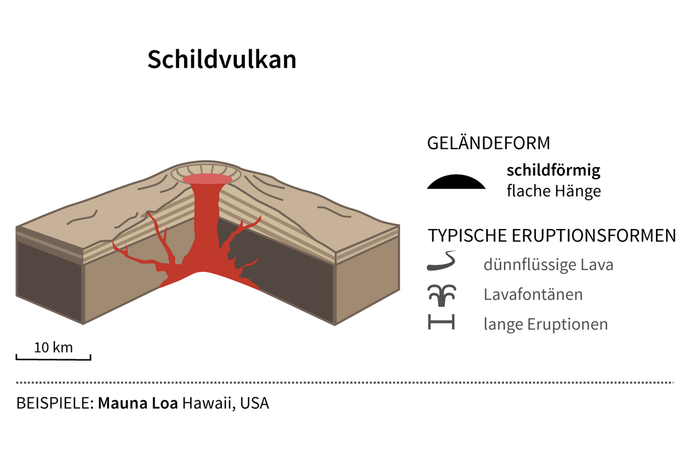
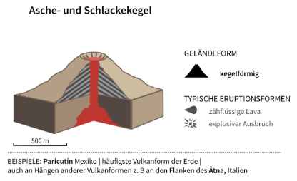
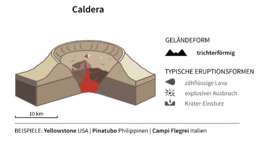
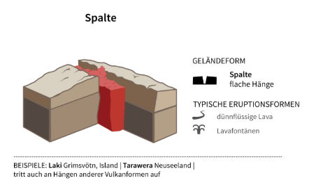

Vulkanismus
Diese Präsentation erklärt die Grundlagen des Vulkanismus und den Aufbau verschiedener Vulkanarten mit besonderem Schwerpunkt auf Schicht- und Schildvulkanen.
Inhaltsverzeichnis :
Die Präsentation ist so aufgebaut :
Handout: Vulkanismus
• 1. Allgemein Grundlagen des Vulkanismus
• 2. Vulkanarten
• 3. Schildvulkane & Schicht- und Schildvulkane
• 4. Auswirkungen auf den Menschen
1. Vulkanismus
1.1 Definition Vulkane

Ein Vulkan ist eine Öffnung in der Erdkruste, durch die Magma (nach dem Austreten Lava genannt), Gase und Asche aus dem Erdinneren an die Oberfläche gelangen.
1.2 Enstehung von Vulkanen

Durch Öffnungen in der Erdkruste gelangt Magma aus dem Erdinneren an die Oberfläche und verursacht dort eine Erhebung.
Dies kann durch Kollision oder Auseinanderdriften von Erdplatten oder an Hotspots geschehen.
1.3 Grundaufbau eines Vulkans

Im unterem Erdmantel schmilzt Gestein und das Magma steigt bei hohem Druck auf.
Unter dem Vulkan im oberen Erdmantel ensteht eine Magmakammer.
Der Vulkan besteht aus Lava und Ascheschichten, die bei vorigen Ausbrüchen enstanden.
In der Mitte des Vulkans gibt es einen Hauptkrater, in dem Lava beim Ausbruch hochsteigt und oft haben Vulkane ein paar Nebenkrater.
2. Vulkanarten
Themenübersicht:
Es gibt verschiedene Arten von Vulkanen: Schichtvulkan, Schildvulkan, Schlackekegel, Caldera, Spalte

• Schichtvulkane: kegelförmig, steile Hänge, zähflüssige Lava, explosiver Ausbruch

• Schildvulkane: schildförmig, flache Hänge, dünnflüssige Lava, Lavafontäne, lange Eruption

• Schlackekegel: kegelförmig, zähflüssige Lava, explosiver Ausbruch

• Caldera: trichterförmig, zähflüssige Lava, explosiver Ausbruch, Krater stürzt nach Ausbruch ein

• Spalte: Spalte, flache Hänge, dünnflüssige Lava, Lavafontäne
3. Schicht- und Schildvulkane
3.1 Schichtvulkane
Ähnlich wie beim Schildvulkan entsteht er durch Austreten Magmas aus dem oberen Erdmantel, doch anders als beim Schildvulkan ist die Lava dickflüssig.
Dadurch fließt die Lava langsamer und hat mehr Zeit, zu erkalten. Dadurch entsteht ein steiler Hang von oft bis zu 40 km Höhe. Vorkommen des Schildvulkans ist gleich dem Vorkommen des Schichtvulkans.
3.2 Schildvulkane
Schildvulkane entstehen durch schnell fließende Lava, die aus dem oberen Erdmantel austritt, durch die ein ca. 5 ° steiler Hang entsteht.
Schildvulkane werden auch Rote Vulkane genannt, denn sie fördern gigantische Massen dünnflüssiger Lava, die aber ruhig und kontinuierlich austritt. Die meisten Schildvulkane liegen über Lithosphärenplatten.
4. Auswirkungen auf den Menschen
Auswirkungen auf den Menschen
Nachteile:
- ▪ Durch giftige Gase entsteht Luftverschmutzung.
- ▪ Es können auch Erdbeben, Erdrutsche und Tsunamis ausgelöst werden.
- ▪ Ein Vulkanausbruch tötet die Vegetation, Tierarten und Menschen.
- ▪ Der Flugverkehr kann eingeschränkt werden.
Vorteile:
- ▪ Es entstehen sehr fruchtbare Böden.
- ▪ Die geothermische Energie kann genutzt werden.
- ▪ Es gelangen wertvolle Rohstoffe an die Oberfläche.
- ▪ Durch den Vulkan selbst sowie damit im Zusammenhang stehende heiße Thermalquellen wird der Tourismus gefördert.
- ▪ Es kann neue Landmasse gebildet werden, beispielsweise neue Inseln und erweiterte Küstenlinien (z.B. Hawaii).
LEISTUNGSKONTROLLE
Überprüfung der Lerninhalte zum Thema Vulkanismus.